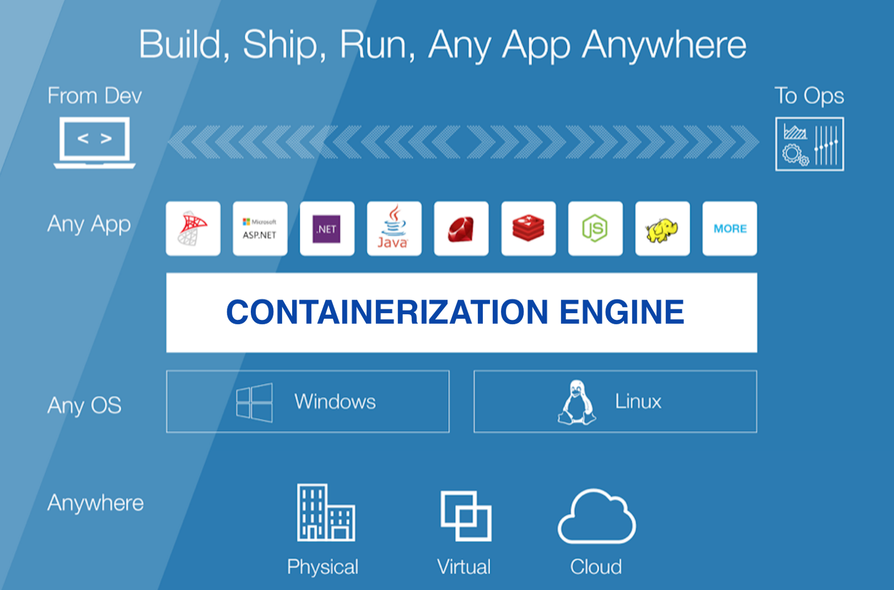

Containerization is a system of intermodal freight transport using intermodal containers (also called shipping containers and ISO containers).The containers have standardized dimensions. They can be loaded and unloaded, stacked, transported efficiently over long distances, and transferred from one mode of transport to another—container ships, rail transport flatcars, and semi-trailer trucks—without being opened. The handling system is completely mechanized so that all handling is done with cranes and special forklift trucks. All containers are numbered and tracked using computerized systems.
Containerization originated several centuries ago but was not well developed or widely applied until after World War II, when it dramatically reduced the costs of transport, supported the post-war boom in international trade, and was a major element in globalization. Containerization did away with the manual sorting of most shipments and the need for warehousing. It displaced many thousands of dock workers who formerly handled break bulk cargo. Containerization also reduced congestion in ports, significantly shortened shipping time and reduced losses from damage and theft.
Containers can be made from a wide range of materials such as steel, fibre-reinforced polymer, aluminium or a combination of all.
Containers can be made of weathering steel to minimize maintenance needs.
Containerization Standars

ISO standard
Main article: Intermodal container
There are five common standard lengths:
- 20 ft (6.10 m)
- 40 ft (12.19 m)
- 45 ft (13.72 m)
- 48 ft (14.63 m)
- 53 ft (16.15 m)
US domestic standard containers are generally 48 ft (14.63 m) and 53 ft (16.15 m) (rail and truck). Container capacity is often expressed in twenty-foot equivalent units (TEU, or sometimes teu). An equivalent unit is a measure of containerized cargo capacity equal to one standard 20 ft (6.10 m) (length) × 8 ft (2.44 m) (width) container. As this is an approximate measure, the height of the box is not considered. For instance, the 9 ft 6 in (2.90 m) high cube and the 4 ft 3 in (1.30 m) half height 20 ft (6.10 m) containers are also called one TEU. 48' containers have been phased out over the last ten years in favor of 53' containers.
The maximum gross mass for a 20 ft (6.10 m) dry cargo container was initially set at 24,000 kg (53,000 lb), and 30,480 kg (67,200 lb)for a 40 ft (12.19 m) container (including the 9 ft 6 in or 2.90 m high cube) . Allowing for the tare mass of the container, the maximum payload mass is therefore reduced to approximately 22,000 kg (49,000 lb) for 20 ft (6.10 m), and 27,000 kg (60,000 lb) for 40 ft (12.19 m) containers.
It was increased to 30,480 kg for the 20' in 2005, then further increased to a max of 36,000 kg for all sizes by the amendment 2 (2016) of the ISO standard 668 (2013).
The original choice of 8-foot (2.44 m) height for ISO containers was made in part to suit a large proportion of railway tunnels, though some had to be modified. The current standard is eight feet six inches (2.59 m) high. With the arrival of even taller hi-cube containers at nine feet six inches (2.90 m) and double stacking rail cars, further enlargement of the rail loading gauge is proving necessary.
Air freight containers
While major airlines use containers that are custom designed for their aircraft and associated ground handling equipment the IATA has created a set of standard aluminium container sizes of up to 11.52 m3 (407 cu ft) in volume.
Other Container System Standards:
- (1922) NYC container
- von-Haus-zu-Haus (house to house; Germany)
- Japanese railway containers: Containers used by the Japan Freight Railway Company
- (1925) Mack
- (1927) English Railway container
- (1928) Victorian Railways – refrigerated container
- International Competition
- GWR Container
- International Chamber of Commerce
- International Container Bureau
- (1936) SAR Wolseley break of gauge
- (1946) Queensland Railways milk container, 2,000 imperial gallons (9,100 L; 2,400 US gal), road-rail
- (1978) RACE (Australia) – slightly wider than ISO containers to fit slightly wider Australian Standard Pallets
- (1994) ACTS roller containers for intermodal transport by rail and road (Central Europe)
- (1998) PODS
- (2005?) SECU (Sweden, Finland, UK) – big 95 t (93 long tons; 105 short tons) container.
- Pallet-wide containers are used in Europe and have length (45, 40 or 20 ft or 13.72, 12.19 or 6.10 m) and height like ISO-containers, but they are 2.484 m (8 ft 1.8 in) wide externally and 2.420 m (7 ft 11.3 in) internally to fit EUR-pallet better. They are meant for transport inside Europe and are often accepted in ships.
For more information, click here